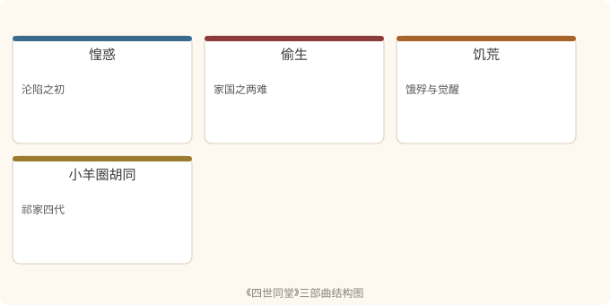

四世同堂
一、基本信息
| 作者 | 老舍 |
|---|---|
| 成书/出版 | 1944—1948年创作（惶惑/偷生/饥荒三部，通说待核）；Britannica 及维基口径见 B081 Lao She — Wikipedia (EN)（百科全书） |
| 国别/地区 | 中国 |
| 时代 | 现当代 · 现代 |
| 体裁 | 长篇小说 |
| 语言 | 汉语（白话） |

《四世同堂》三部曲结构图（主题·结构图）
二、创作背景
B081（English Wikipedia，Lao She 条）确认其战时创作生涯与《四世同堂》三部曲的存在（维基口径，细节待核）。
背景：1937年北平沦陷至抗战胜利，小羊圈胡同祁家四代人的八年（通说）。
三、内容脉络
第一部《惶惑》：沦陷之初，祁老人的四世同堂理想被战争打破（通说）。
第二部《偷生》：妥协与抵抗并存，瑞宣在家与国之间挣扎（通说）。
第三部《饥荒》：饥馑中崩溃与反抗——小妞子饿死等结局（通说）。
人物群像：钱默吟由诗人变为地下抵抗者；冠晓荷、大赤包等汉奸群丑（通说）。
四、主要人物表
| 人物 | 身份 | 说明 |
|---|---|---|
| 祁老太爷 | 家长 | 四世同堂梦的象征 |
| 祁瑞宣 | 长孙 | 孝与忠的两难 |
| 钱默吟 | 诗人 | 由隐而抗（通说） |
| 冠晓荷与大赤包 | 汉奸夫妇 | 丑剧代表 |
五、主题与艺术特点
- 亡城八年：市民视角的沦陷史（通说）。
- 国民性反思：顺民心理与觉醒过程（通说）。
- 家族伦理与民族命运的碰撞（通说）。
六、影响与评论
- B081（English Wikipedia）：与《骆驼祥子》《茶馆》并列的老舍代表作（维基口径）。
Lao She — Wikipedia (EN)（百科全书） - 1980年代由马小弥等据英文缩译本《The Yellow Storm》回译补全《饥荒》后半（通说待核）。
Lao She — Wikipedia (EN)（百科全书）
七、阅读建议
难点
- 三部曲体量（约百万字，通说待核）。
- 北平方言与礼俗。
- 《四世同堂》（百花文艺出版社/人民文学出版社，通说待核）。
先读《惶惑》建立人物表 → 匀速通读三部。
八、待核实
- 三部发表与结集年表（惶惑1944—45/偷生1945—46/饥荒1946—48说）待核。
- 《饥荒》回译史细节待核。
- 小羊圈胡同原型（小杨家胡同）待核。
本页主要来源
老舍的其他收录作品：骆驼祥子